Real results for real creators. From launch to scale — here's what we've built together.
End-to-end production, strategy, and growth for some of the UK's most recognised independent podcast brands.
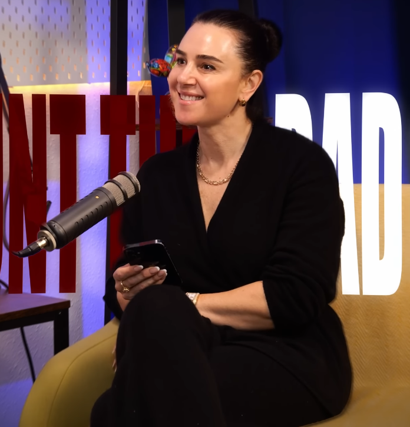
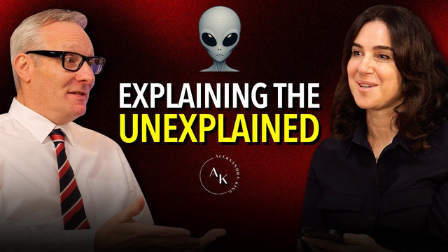
Aleksandra King partnered with London Media Lounge from day one to launch and grow her YouTube podcast.
London Media Lounge managed the full operation, including guest booking, production, editing, and short-form content strategy, building a consistent content engine designed for growth.
In just two years, the channel has scaled to 50,000+ subscribers and generated hundreds of thousands of views, driven by a combination of long-form interviews and high-performing social clips.
The result is a fast-growing podcast brand, with London Media Lounge playing a key role in its ongoing growth and content strategy.
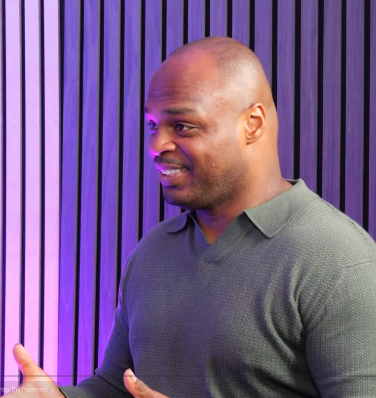
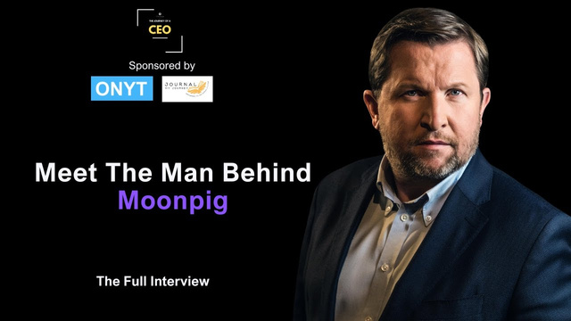
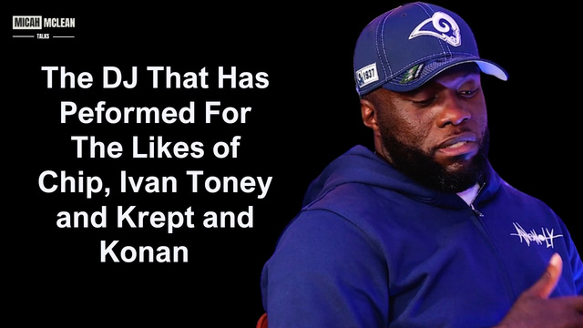
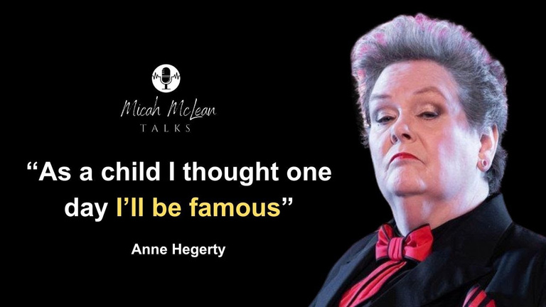
London Media Lounge partnered with Micah McLean at an early stage, when his YouTube channel was still under 1,000 subscribers, to help build and scale his business-focused podcast, Micah McLean Talks.
From the beginning, we provided full end-to-end support, managing high-profile interviewees, production, editing, and developing a strong clip strategy to maximise reach.
A key part of the partnership has been maintaining consistency and structure, allowing the channel to grow steadily and sustainably.
As a result, the channel has scaled from under 1K subscribers to nearly 30,000 subscribers, generating millions of views across its content. Today, Micah McLean Talks stands as a growing platform in the business podcast space.
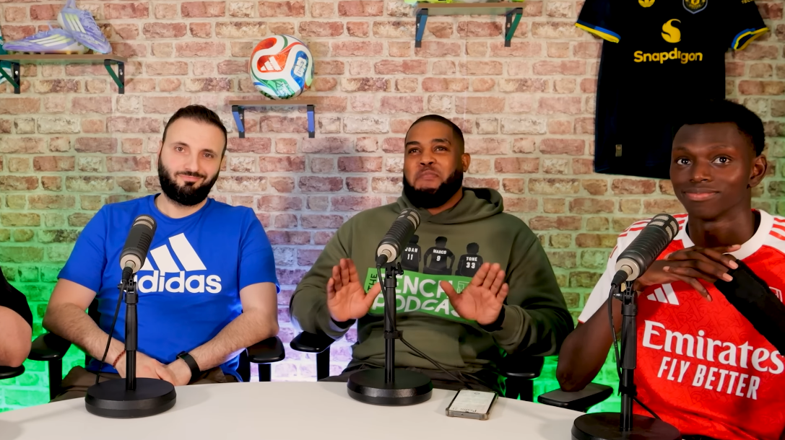
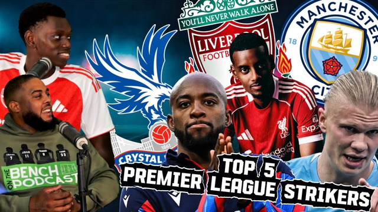
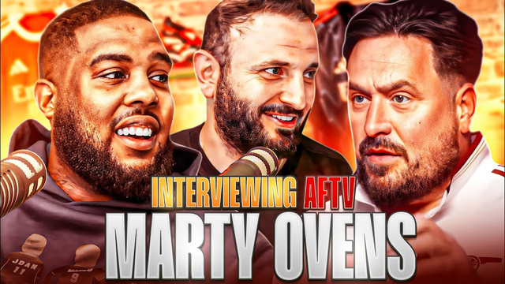
London Media Lounge partnered with On The Bench, a football-focused podcast, after the team's initial studio setup didn't deliver the results they were looking for.
We worked closely with the hosts over a two-year period, helping reshape the podcast across production, content, and growth strategy. Our work included full podcast production, developing a strong clip and promotion strategy, refining thumbnails, and building a studio setup tailored exactly to their vision.
A key focus was consistency and creating content that performs both long-form and in short-form formats. As a result, the channel has grown to approximately 35,000 subscribers, with episodes consistently averaging between 20K–35K views.
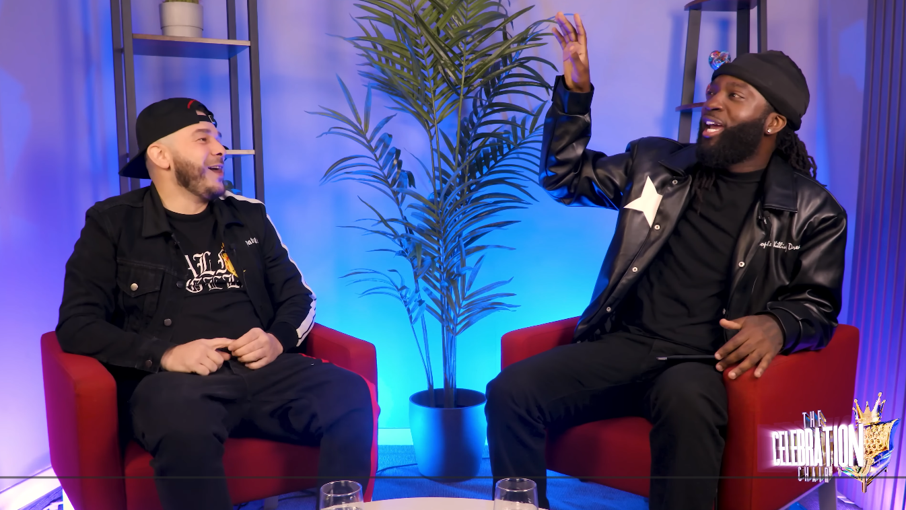
Jazzie Zonzolo chose London Media Lounge to produce his show, The Celebration Chair — an interview-style show built around high-quality conversations with high-profile guests.
Jazzie trusted London Media Lounge due to our experience working with notable talent, as well as the level of care, comfort, and hospitality we provide to every guest in the studio. From the moment guests arrive to the final delivery of each episode, the focus was on creating a premium, seamless experience.
We supported the show end-to-end — full production, set design tailored to Jazzie's vision, editing, graphics, intros/outros, and overall content direction. The show welcomed well-known names such as K Koke and Big Narstie, contributing to strong-performing episodes and consistent audience engagement.
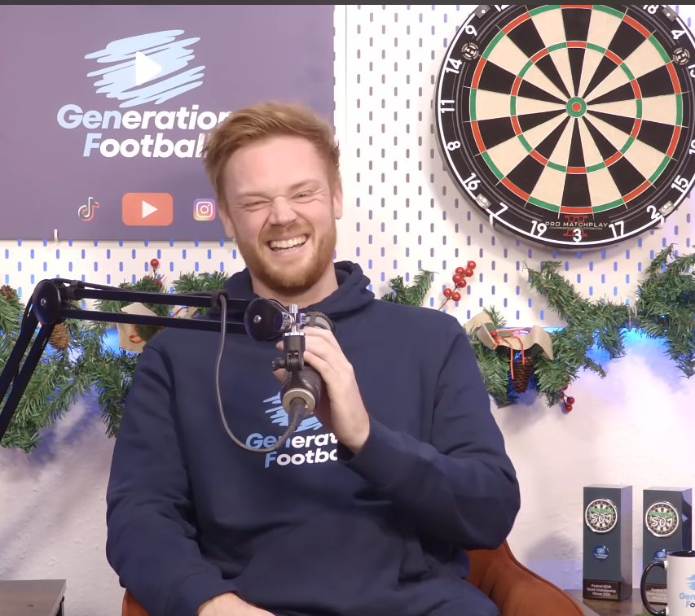
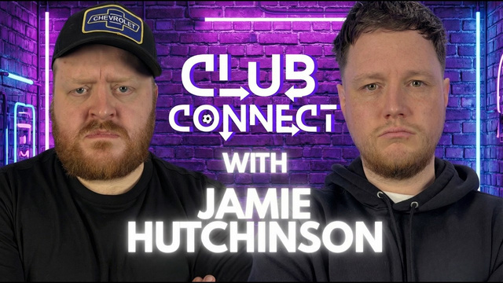
London Media Lounge partnered with Generation Football from the very beginning, building the channel entirely from scratch with no prior audience or content base.
From day one, every aspect of production was developed and managed in our studio — filming, editing, set design, and content strategy. What started as an idea has now grown into a highly successful multi-platform brand, reaching approximately 35K–40K YouTube subscribers, over 100K social media followers, and generating millions and millions of views.
The impact of this growth has been significant: the team behind Generation Football have transitioned into full-time creators, with sponsorships and content revenue allowing them to leave their previous jobs entirely. A defining example of what consistent production and long-term strategy can achieve.
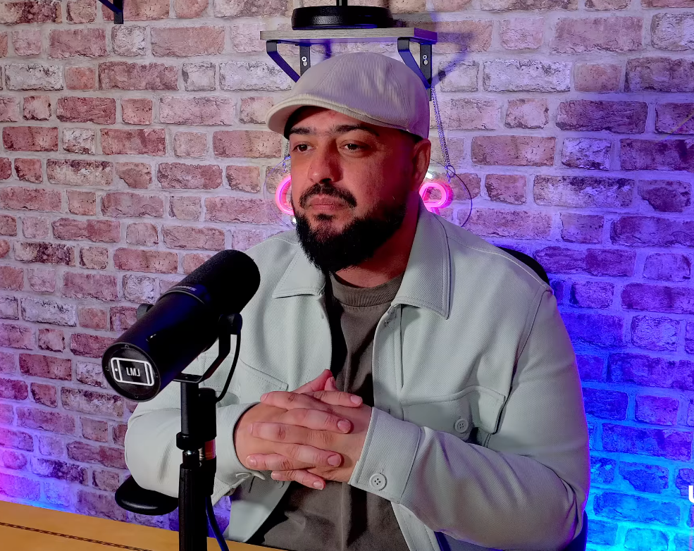
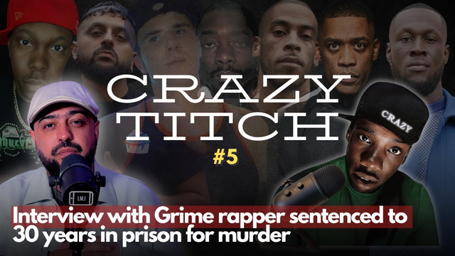
London Media Lounge partnered with Shaq Warner to develop and produce his YouTube channel Shaq Warner Unchained, which focuses on investigative-style journalism, covering topics such as legal issues, conspiracies, and in-depth commentary.
Our team supported full production, editing, and content direction to help shape a consistent and engaging format. We also established a strong clip strategy enabling content to perform across both YouTube and social media platforms.
With only around a dozen core episodes, Shaq built a loyal audience and established a clear voice in his niche — generating millions of views and demonstrating the impact of consistency, strategy, and strong production support.
London Media Lounge is a trusted studio for some of the UK's leading creators and personalities.
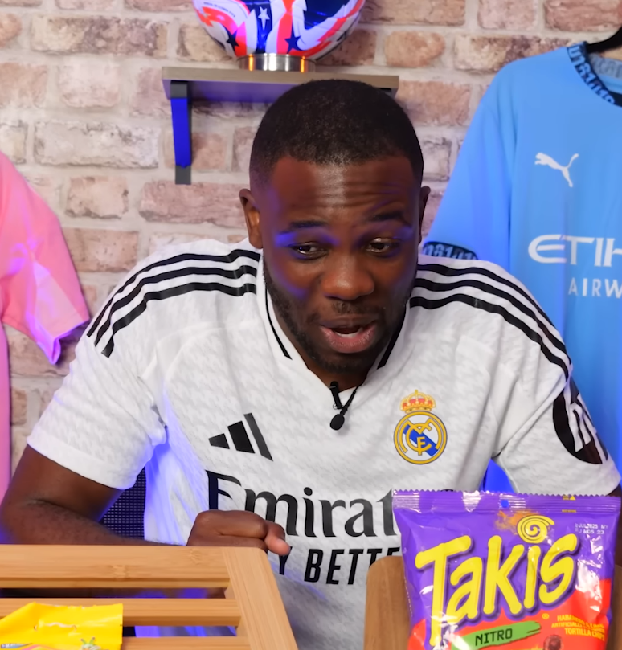
One of the UK's most trusted creators, Nathan Connor regularly uses the studio for collaboration content with creators from across the UK. Its easy motorway access makes it the natural hub for high-level collaborative productions.
A leading UK educator in skincare for skin of colour, Dr Vanita Rattan uses London Media Lounge for content production and filming, benefiting from a fully equipped professional environment outside central London.
Hazzy uses London Media Lounge as a base for creating podcast content and testing new ideas. The convenience, professional setup, and easy access make it ideal for consistent filming and collaboration.
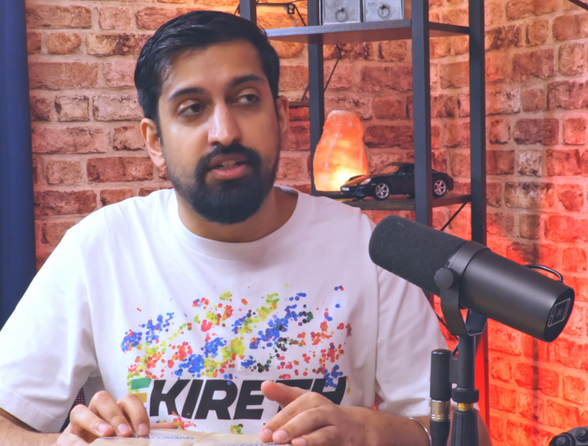
A well-established UK creator in the sim racing space with over 100K subscribers and 60M+ views on YouTube. We support Kireth with studio use for content production whenever needed.
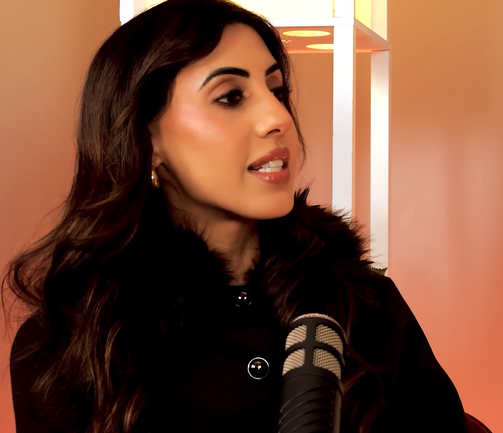
Known for his appearance on Love Is Blind UK, Sarover uses the studio for content creation, podcasting, and collaborations — benefiting from a premium setup and a convenient location outside of central London.
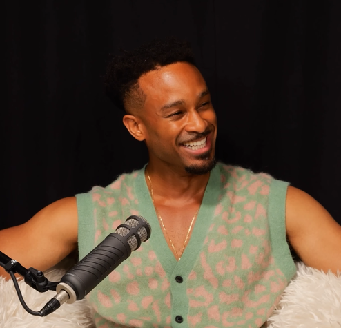
Known for his appearance on Love Island UK, Teddy Soares uses London Media Lounge to film high-quality content without the hassle of central London travel — a go-to location for collaborations and media production.
London Media Lounge attracts creators from around the world, cementing its reputation as a globally recognised production destination.
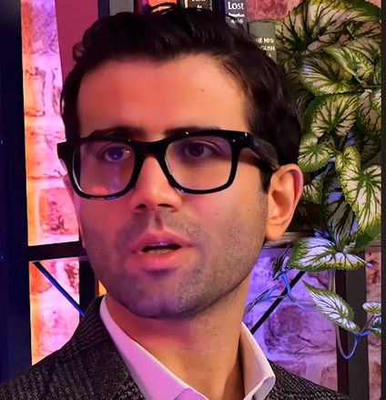
One of the biggest shows in Jamaica and across the West Indies, with over 350K subscribers and 90M+ views on YouTube. Choosing London Media Lounge highlights our ability to attract international, high-level productions.
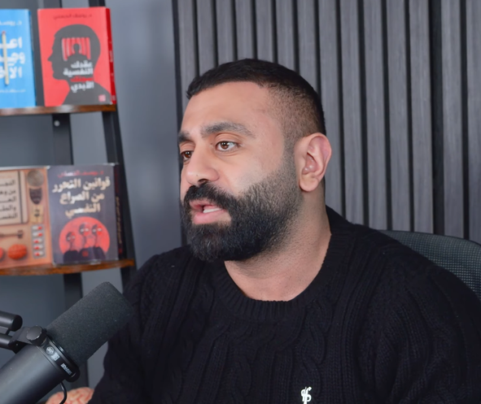
A creator from Kuwait who has been producing content with us for over two years. His educational channel reaches a wide audience across the region, generating millions of views through consistent, high-quality production.
An international creator producing short-form content for a global audience. His videos have generated millions and millions of views, driven by a strong focus on consistent, engaging short-form output produced at our studio.
From on-location shoots to in-studio productions — we create content that performs across every platform.
Join the creators who trust London Media Lounge to grow their audience and produce world-class content.
Get In Touch